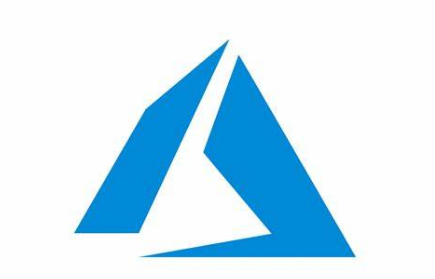

Šiandienos data:
Mano pirmasis įrašas!

def hello():
print("Sveikas, pasauli!")
☁️ Debesų kompiuterija
Debesų kompiuterija (angl. Cloud Computing) – tai internetinė paslauga, leidžianti naudotis programomis, laikyti duomenis ir vykdyti skaičiavimus nuotoliniuose serveriuose, o ne savo kompiuteryje. Tokiu būdu galima lengvai plėsti išteklius ir pasiekti informaciją iš bet kurio įrenginio.